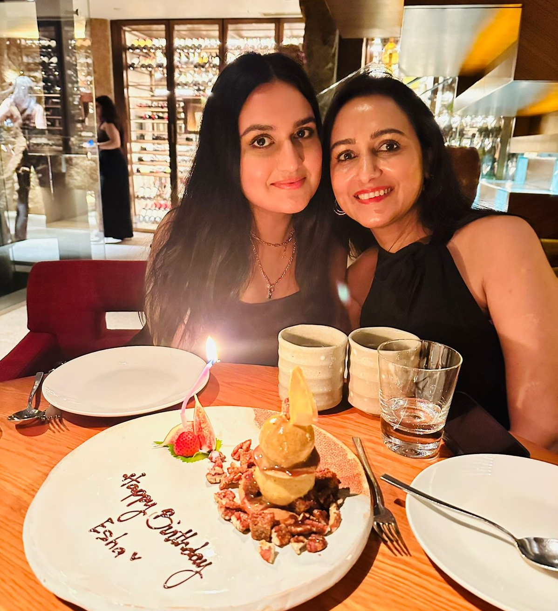
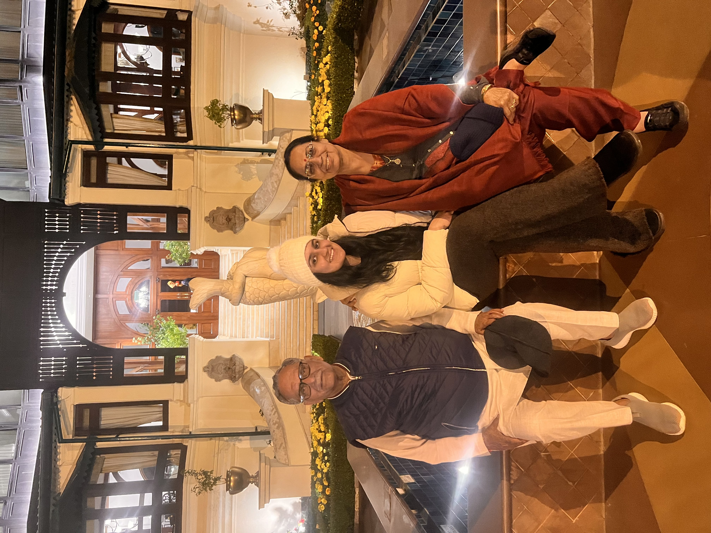

I have a relatively small family and unlike most people I DO pick favorites! Below is a list of all my family members with my most favorite at the top and least favorite at the bottom:
My mother Jyoti

Me and my mother.
My mother's my favorite family member because she’s practically my best friend.
My mother used to work at HSBC bank before she took early retirement 5 years ago.
Her hobbies include: nutrition, pilates, and stock trading.
My maternal grandparents: Vasudev and Pushpa

My grandfather Vasudev, me, and my grandmother Pushpa.
I’ve always been really close to my maternal grandparents because they used to visit me a lot when I was younger.
My grandparents live in Dehradun, India. They have three children together: Ravi, Sunil, and my mother Jyoti.
They are the sweetest and most humble people I know!
My cousins: Reet, Ruhi, Ryna, and Eyana
My cousin Eyana, my cousin Ryna, and me.My cousin Reet, my cousin Ruhi, and me.
I love my little cousins and I’m really protective of them because they’re all at least 10 years younger than me.
Reet and Ruhi both live in Dehradun, India. They are the daughters of my aunt Sonia and uncle Ravi.
Ryna and Eyana both live in Dubai, UAE. They are the daughters of my aunt Ruchi and uncle Sunil.
My aunt Sonia and uncle Ravi
My mother, me, my uncle Ravi, my uncle Sunil and my aunt Sonia.
Aunt Sonia and uncle Ravi are really fun and used to play with me a lot when I was a kid - we also had fun adventures together.
They are both chartered accountants and my uncle Ravi even has a law degree.
My aunt Ruchi and uncle Sunil
My uncle Sunil, my cousin Eyana, me, my cousin Ryna, my aunt Ruchi and my mother.
Aunt Ruchi and uncle Sunil are really lovely too but they’re not as fun as my other family members, which is why they’re my least favorite.
Aunt Ruchi is a homemaker with a degree in Nutrition. My uncle Sunil is a chartered accountant and was the CFO of Emaar - he now runs his own financial consulting firm.